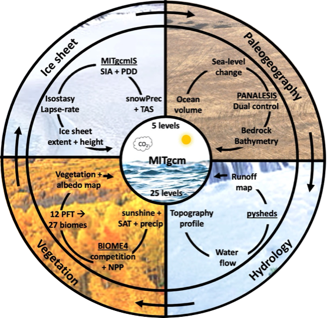
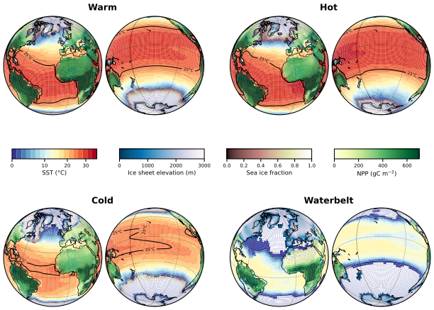
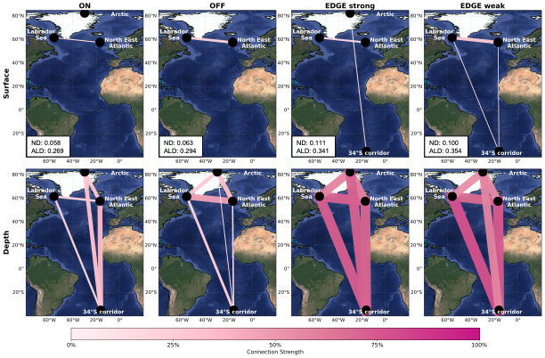

01 BIG-MITgcm

Developed efficient coupled climate models that represent the atmosphere, ocean, sea ice, vegetation, and ice sheets.
I am currently a PhD researcher at the University of Geneva in physics studying how the Earth system can occupy multiple climate states — and how feedbacks, stability and nonlinear dynamics shape transitions between them.

My research focuses on how nonlinear interactions within the Earth system give rise to multiple climate states and tipping behavior. I combine coupled climate modeling, nonlinear dynamics, and paleoclimate data to understand the emergence and stability of Earth’s multiple equilibrium states, their transitions, and their consistency with paleoclimate evidence. I also use climate network approaches to characterize the spatial signatures of climate states and identify early warning signals of approaching transitions.

Developed efficient coupled climate models that represent the atmosphere, ocean, sea ice, vegetation, and ice sheets.

Characterising multiple climate states, from Snowball to Hothouse Earth, and understanding their role in Earth’s climate evolution over the last million years and into the future.

Developing methods to characterize transitions between climate states and identify early warning signals of approaching transitions.
This work characterizes the spatial signature of the AMOC edge state, also known as the Melancholia state, which lies on the boundary separating the ON and OFF states of the circulation. Using climate networks, we identify a distinct signature of this state, marked by enhanced teleconnections between the northern and southern Atlantic and increased network connectivity. These results provide a potential way to identify the AMOC edge state in state-of-the-art climate models and, potentially, in observations. They may also contribute to the development of early warning signals for an approaching AMOC collapse.
The figure on the right shows the strength of the links between the different regions. The edge state, in its two convective modes, is characterized by the emergence of teleconnections with the 34° region at the surface. This shows that this unstable state exhibits a distinct spatial signature.
Read the publication
Physical Review Research 8, 033268 (2026).
DOI →Geoscientific Model Development 19, 4357–4384 (2026).
DOI →Scientific Reports 16, 8797 (2026).
DOI →Chaos: An Interdisciplinary Journal of Nonlinear Science 34, 123161 (2024).
DOI →I enjoy teaching across physics, climate science and mathematics, with an emphasis on making complex concepts intuitive and engaging.
Nonlinear climate dynamics, climate multistability, tipping behaviour, climate sensitivity and coupled Earth-system modelling.
MSc thesis on climate change velocity computation applied to ecology.
Foundations in physics, mathematics and computational methods.
Science communication, conference activities, peer review and engagement with the wider climate-science community.
CHF 30,000 · Support for academic independence.
€1,400 · Global tipping points research.
€2,300 · Biogeodynamical paleoclimate modelling.
CHF 1,000 · Swiss Global Change Day.
I am always happy to discuss research, collaborations, teaching, nonlinear climate dynamics and Earth-system science.